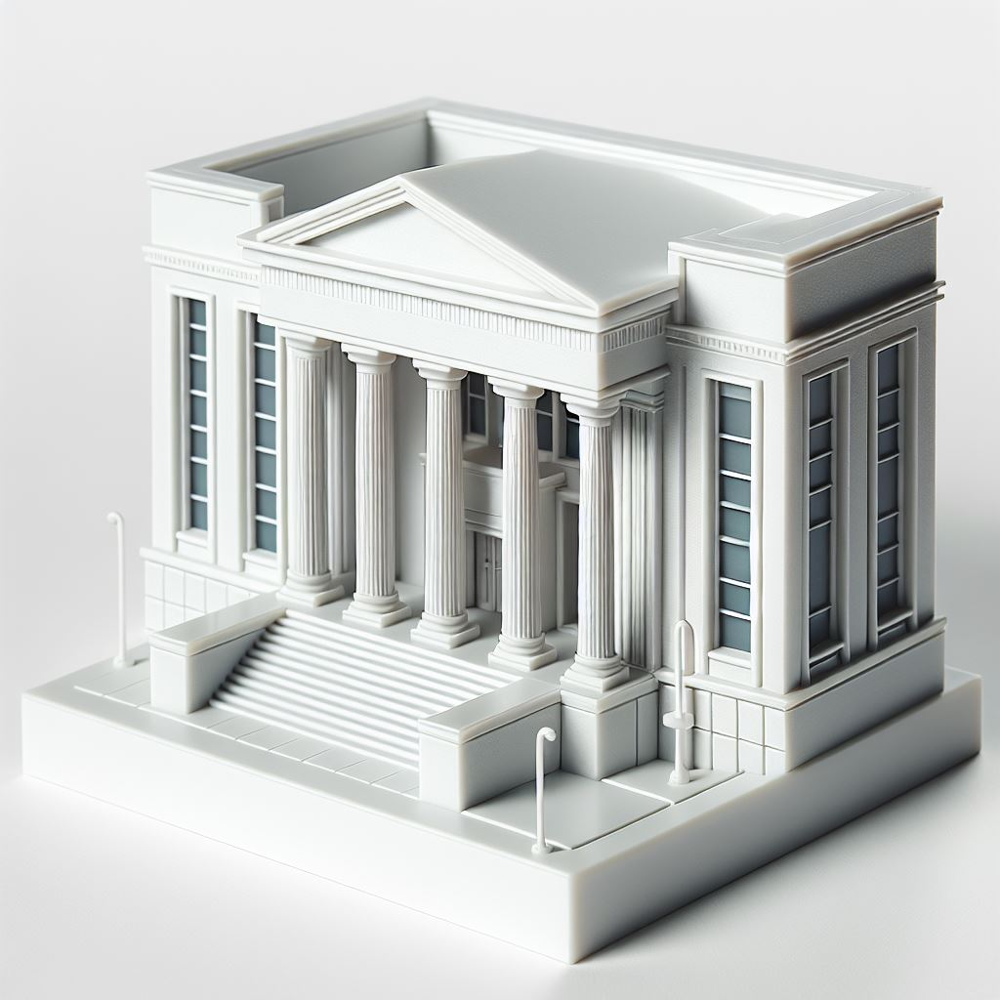

Prefeitura
Rei
A prefeitura, que administra a cidade, é equivalente ao Rei no xadrez. Assim como o Rei, que tem movimentação limitada, mas é vital para o jogo, a prefeitura tem uma função central nas decisões sobre a cidade e sua infraestrutura, sendo o eixo principal das políticas de mobilidade urbana.
